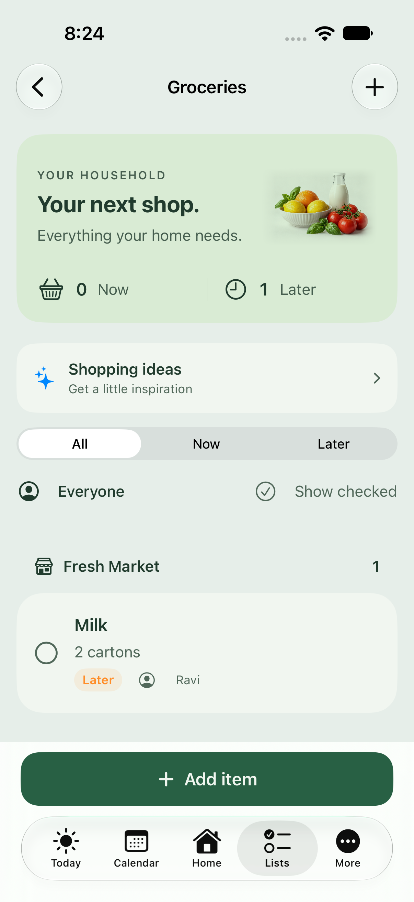
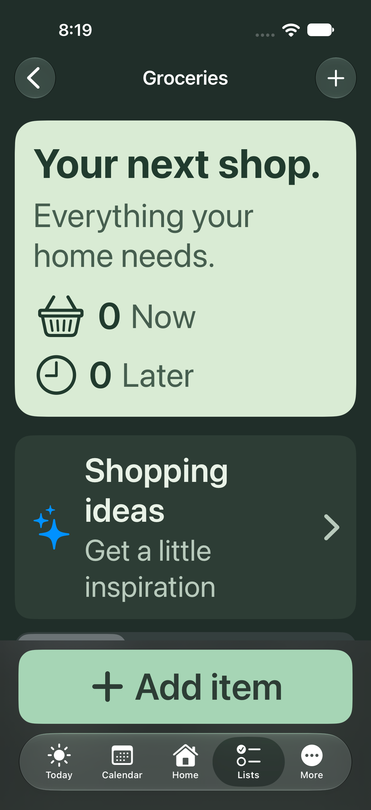
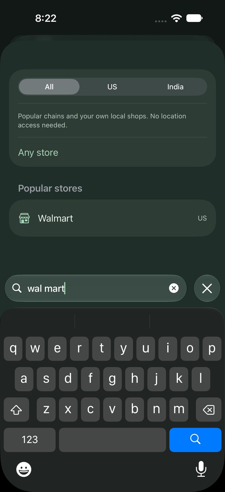
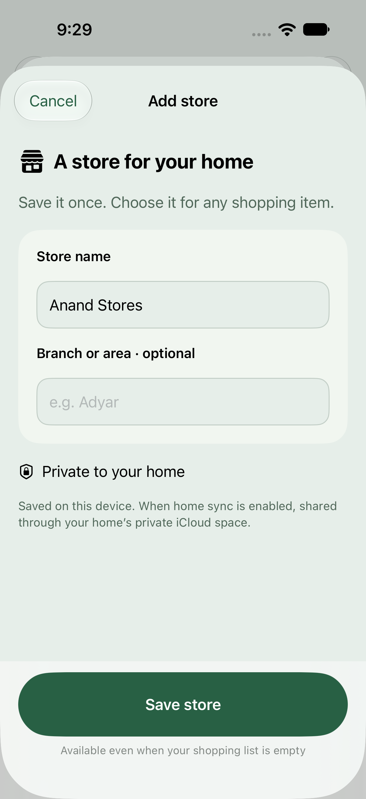
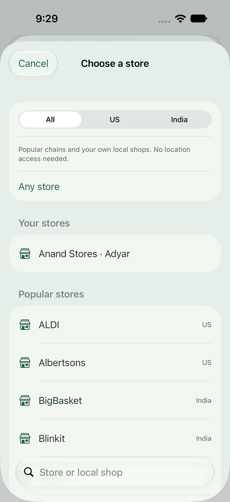

LUNAHEARTH · DESIGN REVIEW
Your next shop.
Soft sage surfaces, colorful groceries, and searchable US / India stores.
Actual simulator screens. Available in TestFlight 0.1.0 (3). Private CloudKit production schema deployed; live device sharing verification remains pending.

Shopping · Light
Dark · Accessibility text
Offline store search
Add a private store
Reusable household stores